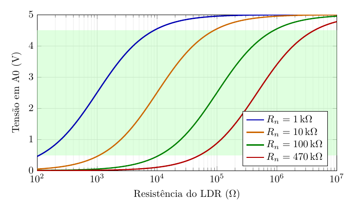

Como funciona
Do sensor ao número na tela: veja como o LUXIF transforma luz em uma medida em lux. A ideia é entender o princípio, para poder montar o seu e melhorá-lo.
O caminho da medição
- A luz chega ao LDR e muda a sua resistência: quanto mais luz, menor a resistência.
- O LDR forma um divisor de tensão com um dos quatro resistores de referência. A tensão no ponto entre os dois depende da luz.
- O Arduino lê essa tensão com seu conversor analógico-digital. Se ela estiver alta ou baixa demais, ele troca de resistor e lê de novo.
- Com a leitura e o resistor em uso, o Arduino calcula o valor em lux e o mostra no display OLED.
O sensor
O LUXIF usa um LDR (resistor dependente de luz) de 10 mm. Ele é feito de um material semicondutor, o sulfeto de cádmio: quando a luz o atinge, libera cargas elétricas e a resistência cai. Essa queda não é linear, mas segue uma lei de potência:
R = A × L−γ
R é a resistência do LDR, em ohms; L é a iluminância, em lux; A é a resistência do LDR em 1 lux; e γ (gama) indica o quanto a resistência cai quando a luz aumenta. A e γ vêm do datasheet e são ajustados na calibração.


O circuito
Cada resistor de referência (1 kΩ, 10 kΩ, 100 kΩ e 470 kΩ) está ligado a uma saída do Arduino (D2 a D5). Só uma saída fica ligada (5 V) por vez; as outras ficam como entrada, o que na prática desconecta seus resistores. O resistor ligado e o LDR formam um divisor de tensão, e o ponto entre eles vai para a entrada analógica A0:
V = 5 V × RLDR ÷ (Rn + RLDR)
Rn é o resistor em uso. Como as duas resistências são sempre positivas, a fração fica entre 0 e 1: a tensão lida nunca passa de 5 V, o limite da entrada A0. Os LEDs azuis que indicam a faixa ficam em saídas próprias (D8 a D11), fora do divisor, para não interferir na medição.
Do sinal ao lux
A cada volta do programa, o Arduino:
- lê a entrada A0 dez vezes seguidas e tira a média, obtendo um número N entre 0 e 1023;
- confere se N está entre 100 e 920 (cerca de 0,5 V e 4,5 V). Acima disso, o ambiente está escuro para a faixa e ele passa para um resistor maior; abaixo, está claro demais e ele passa para um menor;
- calcula a resistência do LDR pelo divisor: RLDR = Rn × N ÷ (1023 − N);
- converte a resistência em lux invertendo a curva do sensor: L = (A ÷ RLDR)1/γ;
- mostra o resultado no display, com o LED da faixa aceso.
Alcance estimado
O código só calcula o lux quando a leitura N está entre 100 e 920. Pelo divisor, RLDR = Rn × N ÷ (1023 − N), então, em cada faixa, a resistência do LDR vai de 0,108 × Rn (N = 100) a 8,93 × Rn (N = 920). Convertendo com a curva do código (A = 75 000 Ω e γ = 0,7), L = (A ÷ RLDR)1/γ:
| Resistor (Rn) | RLDR medida | Lux (estimativa teórica) |
|---|---|---|
| 1 kΩ | 108 Ω a 8,9 kΩ | de 21 a 11 400 |
| 10 kΩ | 1,08 kΩ a 89 kΩ | de 0,8 a 430 |
| 100 kΩ | 10,8 kΩ a 893 kΩ | de 0,03 a 16 |
| 470 kΩ | 51 kΩ a 4,2 MΩ | de 0,003 a 1,7 |
As quatro faixas se sobrepõem, o que evita "buracos" na medição, e juntas cobrem de cerca de 0,003 a 11 000 lux, da penumbra à claridade. Esses números são uma estimativa teórica, calculada com as constantes típicas do código. Na prática, o alcance real depende do seu LDR, e as medidas nas pontas da escala são as menos confiáveis (veja as limitações abaixo). Para medir a luz do sol direta, que passa de 30 000 lux, coloque um filtro difusor na frente do sensor.
Com o Arduino Uno, uma bateria de 9 V dura várias horas. A versão com ESP32 consome mais por causa do Wi-Fi; para uso prolongado, alimente-a pela USB ou por uma fonte.
Como ajustar ao seu sensor
As constantes A e γ do código são valores típicos. Dois LDRs do mesmo modelo podem ter curvas bem diferentes, então, para valores melhores, compare o seu LUXIF com um luxímetro de referência. Tomando o logaritmo da curva do sensor, R = A × L−γ vira uma reta:
ln R = ln A − γ × ln L
Meça a resistência do LDR em duas iluminâncias conhecidas, (L1, R1) e (L2, R2), calculando cada R pela fórmula do divisor. Então:
γ = ln(R1 ÷ R2) ÷ ln(L2 ÷ L1) e A = R1 × L1γ
Para conferir a conta, use os pontos da Figura 1: 75 kΩ em 1 lux e cerca de 120 Ω em 10 000 lux dão γ = ln(625) ÷ ln(10 000) ≈ 0,70 e A = 75 000 Ω, os valores do código. Troque as constantes A e GAMA pelas suas e grave de novo.
Limitações
O LUXIF é uma base para aprender a montar um luxímetro, não um instrumento de precisão. Vale conhecer o que limita a exatidão:
- O sensor. O LDR não segue exatamente a lei de potência em toda a escala, muda um pouco com a temperatura e responde devagar a variações de luz (o tempo depende do modelo; veja o datasheet). Ele também não reage às cores como o olho humano: luzes de LED, fluorescentes e do sol podem dar leituras diferentes para a mesma iluminância.
- A leitura analógica. O datasheet do ATmega328P, o microcontrolador do Uno, recomenda que o sinal lido pelo ADC tenha impedância de cerca de 10 kΩ ou menos. Nas faixas de 100 kΩ e 470 kΩ, com o LDR no escuro, a impedância é muito maior, e a leitura fica menos exata. A média de 10 leituras e a espera de 10 ms depois de trocar de faixa ajudam, mas não eliminam o problema.
- Sem capacitor em A0. Parece uma boa ideia filtrar o ruído com um capacitor, mas com resistências de até alguns MΩ, um capacitor de 100 nF formaria um filtro RC de constante de tempo da ordem de 0,4 s, muito maior que os 10 ms de espera do código, e a leitura ficaria errada logo depois de cada troca de faixa.
- O pino de saída. A saída do Arduino que fornece os 5 V tem uma resistência interna de algumas dezenas de ohms, que se soma ao resistor de referência. Na faixa de 1 kΩ isso já pesa alguns por cento.
- A calibração. Sem comparar com um luxímetro de referência, os valores em lux são estimativas.
Cada limitação dessas é também um ponto de partida para melhorar o projeto: trocar o sensor, calibrar, filtrar o sinal ou usar um conversor externo.